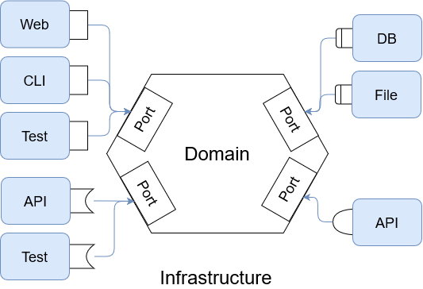
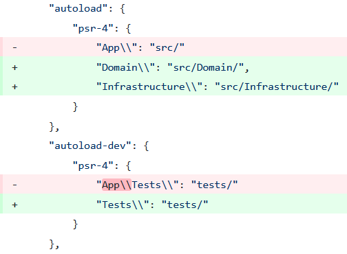
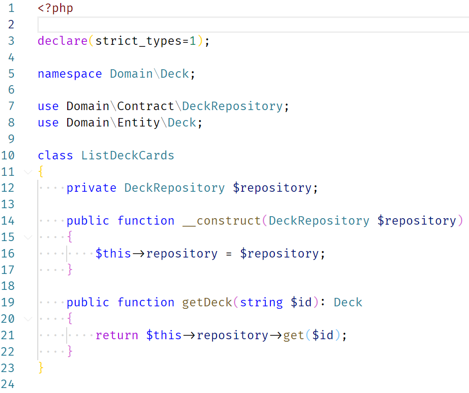
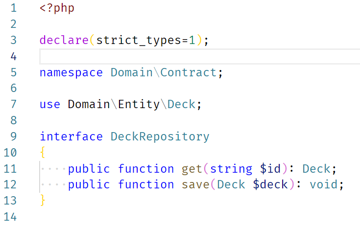
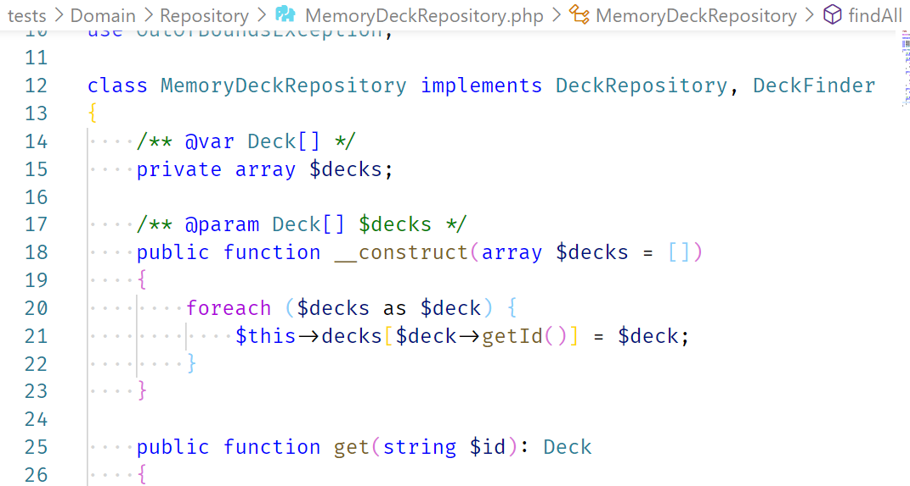
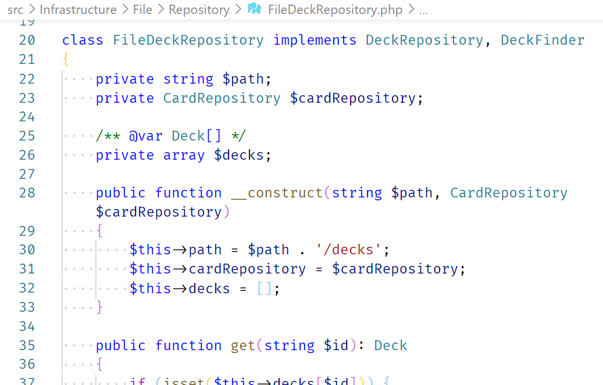

AFUP Day 11/06/2021 - Toulouse
- “Ah, si on pouvait utiliser XXX ! ça a l’air trop bien !”
- “Oui, mais vu tout ce qu’il faudrait réécrire ...”
XXX = nouvelle lib / service / framework

⇒ à réserver aux applications complexes… ou qui vont le devenir
Avec Symfony… car + utilisé et s’y prête bien
C'est une des implémentations possibles
src Domain Infrastructure
Modification autoload dans composer.json

src/Kernel.php ⇒ src/Infrastructure/Symfony/Kernel.php
services:
Domain\:
resource: '../src/Domain'
exclude:
- '../src/Domain/Entity/'
Infrastructure\:
resource: '../src/Infrastructure'
exclude:
- '../src/Infrastructure/Symfony/Kernel.php'
Infrastructure\Symfony\Controller\:
resource: '../src/Infrastructure/Symfony/Controller/'
tags: ['controller.service_arguments']
Domain
Infrastructure




Deptrac : github.com/qossmic/deptrac
Règles :
src Contexte1 Domain Infrastructure Contexte2 Domain Infrastructure [...] Shared Infrastructure
src Contexte1 Application Domain Infrastructure Symfony Doctrine
github.com/blanc-frederic/demo-hexa
Des questions ?